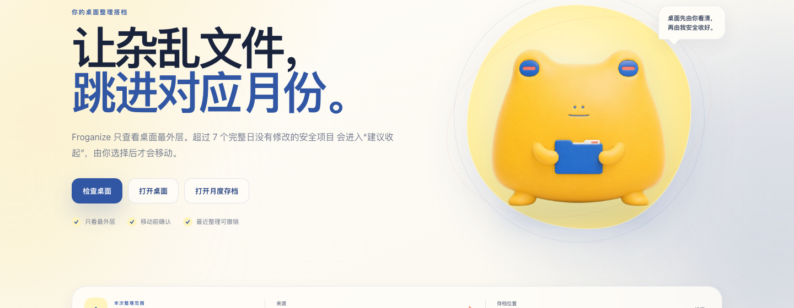

整理前 · Desktop
东西都有用，
只是挤在了一起。
- report.pdf
- Client Handoff
- Meeting Recording.mp4
- Reference Photos
- ~unfinished.tmp
macOS Desktop Organizer
Froganize 是一款本地优先的 Mac 桌面整理工具。它先评估哪些项目适合收起， 等你确认后，再按年份和月份安全整理。
Developer Preview · 公开下载准备中

Before → After
Froganize 只评估桌面最外层。没有选中的项目继续留在原处， 只有你点头的文件和完整文件夹才会进入 Timeline。
整理前 · Desktop
整理后 · Timeline
Client Handoff 没有勾选，仍留在桌面。
One calm workflow
进入产品后，故事里的蛙仔变成清晰的矢量伙伴， 用不同姿态告诉你现在处于哪一步。
 01
01
Inspect
 02
02
Suggest
 03
03
Confirm
 04
04
Undo
Real local interface
检查、选择和确认都在同一个本地页面里完成。 没有账号，没有云端控制台，也没有藏起来的自动整理开关。


Local First, by design
Froganize 少知道一点，也少替你决定一点。 这是它值得信任的方式，不是藏在设置里的选项。
How the magic began
它只是慢慢明白：整理不是让东西消失， 而是给每一件暂时不用的东西，留一个找得回来的去处。

蛙仔试过把文件堆高，也试过假装看不见。 可每一份都像还有用，桌面越挤，它反而越不敢动。

有一天，它捡到一根文件夹形状的魔法杖。 杖没有让文件凭空消失，只让“留下”和“收好”第一次变得清楚。

蛙仔学会先看修改时间：最近 7 天用过的继续留在眼前， 更久没动的只提出建议。主人不点头，它就绝不挥动魔法杖。

确认过的项目进入按年月排列的 Timeline，仍然找得到，也可以撤销。 桌面不必空空如也，只需要重新留给此刻正在发生的事。
From story to product
故事里的魔法，在产品里叫作可控。
走进真实界面，蛙仔会换成更克制、更清晰的矢量形象。 看、收、回顾和撤销，每种姿态都对应一个真实动作。